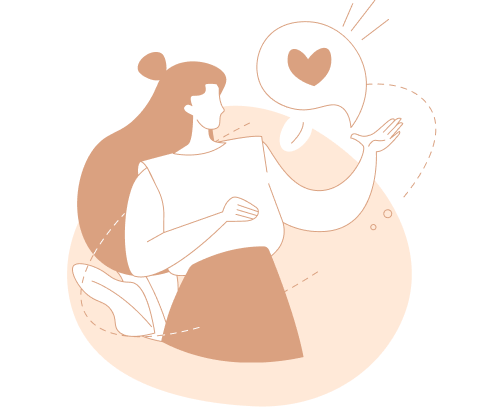

わたしのおもい MESSAGE
突然ですが、こんなお悩みありませんか？
- 世界観がふわっとしか決まっていなくて...
- 持ち合わせている素材がなくて...
- どんな人だろう。任せても大丈夫かな...
- 何から始めたらいいかわからない...
- 思ってたのと違ったらどうしよう...
- Webの知識ないけど大丈夫かな....
そのお悩み、私が解決します！
私が大切にしていること
-
01
不安に寄り添います
丁寧なヒアリングを心がけております。
世界観がふわっとしていても、大丈夫です。
何が課題か、どう伝えていくか
一緒に深堀りしていきます！
もしイラスト等の素材がなくても、無料のものから有料のものまで、イメージに合うものを探すのでご安心ください。 -
02
コミュニケーションを大切にします
10年以上の接客経験を生かし、
持ち前の明るさで、対応させていただきます！
また、レスポンスの早さも大切にしております。信頼して任せていただいたお客様の
気持ちを裏切ることはしません。
不安なことや気になることがあれば
その都度遠慮なくお問い合わせください。 -
03
あなたと二人三脚で創り上げます
企業によっては大人数が関わるため、
引き継ぎがうまくできてなかったり、
認識のズレが生じてしまうことがあります。
私はそうならないよう、お打ち合わせから納品までワンストップで対応させていただきます！案件の数よりもあなたにしっかりと向き合い、「信頼関係」を大切にします。
わたしのこと
デザイナー
ひらた ともか 長崎県出身/京都府在住
前職は京都の旅館で、約6年間勤務しました。
接客から始まり、様々な業務を経験する中で、
2020年からチラシなどのデザイン関係も
担当しました。
デザインに触れていると時間を忘れるほど没頭し、
「デザインを本職にしたい！」「挑戦したい！」
という想いが芽生え、
プロのデザイナーを目指すことに。
その後、デザインとコーディングスキルを身に着け、
2024年6月「デザインパートナーTOMO」
として活動を始めました。
接客や事務の経験も生かし
「優しく、温かく、行き届く」デザインパートナー
として日々精進します！
いままでの歩み
-
- 長崎県で生まれる。
- からだを動かすことが大好き！
-
- 小学校から高校までスポーツに明け暮れる日々(水泳・バドミントン)。
- 根性あると言われるのは絶対にこの経験が土台。
-
- 高校・短大では英語を専攻。
- 英語できたらカッコいい！がきっかけ。
-
- ワーホリでニュージーランドに約1年間滞在。スタッフが日本人1人だけのホテルで働く。
- 異文化交流は価値観や視野を変えるきっかけに！
-
- 海外からのお客様に日本の魅力を感じてもらいたく、「The 和」を求めて京都の旅館に就職。
- 長崎出身ですが、おこしやす〜と言って京都人になりきる。
-
- 約6年間の勤務で、デザイン業務以外にも接客、電話・メール応対、予約管理、プラン作成一般事務など 旅館のほぼすべての業務に携わる。
- どの部署でも、一貫して大切なのは自責と思いやりの心だと感じる。
-
- Webデザインスクールに通い、デザインとコーディングスキルを高める。
- 実践的な課題や、プロの先生によるサポートのおかげで、当サイトを作り上げるまで成長！
-
- 「デザインパートナーTOMO」として活動を始める。
- スクールを卒業しても、情報収集やスキルアップを怠りません！。